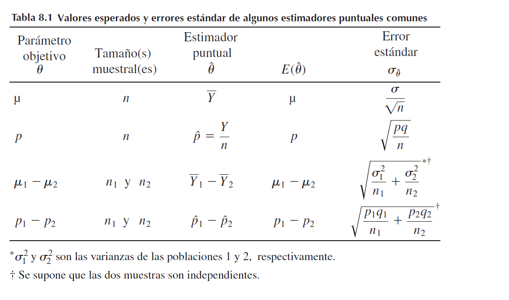

Estimación puntual
Estimación puntual
Una estimación puntual de un parámetro \(\theta\) es un número único que puede ser considerado como un valor sensible de \(\theta\).
Se obtiene una estimación puntual seleccionando un estadístico apropiado y calculando su valor con los datos muestrales dados.
El estadístico seleccionado se llama estimador puntual de \(\theta\).
La estimación puntual es similar, a disparar a un tiro al blanco.

Como las estimaciones son números, se evalua la bondad del estimador puntual al construir una distribución de frecuencia con los valores de las estimaciones obtenidas en muestreo repetido y se observa cómo se agrupa esta distribución alrededor del parámetro objetivo.
 Considere a b como un límite probabilístico en el error de
estimación.
Considere a b como un límite probabilístico en el error de
estimación.
Propiedades de los estimadores
Se desea estimar un parámetro poblacional \(\theta\). El estimador de \(\theta\) estará indicado por el símbolo \(\hat \theta\), que se lee como teta estimado
Se desea que la media o valor esperado de la distribución de estimaciones fuera igual al parámetro estimado; esto es, \(E(\hat \theta)=\theta\) Se dice que los estimadores son insesgados.
La distribución muestral para un estimador puntual está sesgado si \(E(\hat \theta) \neq \theta\)
El error de estimación \(\varepsilon\) es la distancia entre un estimador y su parámetro objetivo. Esto es, \(\varepsilon=\hat \theta-\theta\)
En general Cuando X es una variable aleatoria binomial con parámetros n y p, la proporción muestral \(\hat p=\frac{x}{n}\)es un estimador insesgado de p.
Sean \(X_1, X_2, . . . , X_n\) una muestra aleatoria de una distribución con media y varianza \(\sigma^2\) Entonces el estimador
\[\hat \sigma^2=S^2=\frac{\sum(x_i-\bar x )^2}{n-1}\]
es un estimador insesgado de \(\sigma^2\)
Valores esperados y errores estándar de algunos estimadores puntuales comunes
| Parámetro objetivo | tamaño de muestra | Estimador puntual\(\hat \theta\) | \(E(\hat \theta)\) | Error estándar \(\sigma_{\hat \theta}\) |
|---|---|---|---|---|
| \(\mu\) | n | $Y $ | \(\mu\) | \(\frac{\sigma}{\sqrt n}\) |
| p | n | \(\hat p=\frac{Y}{n}\) | p | \(\sqrt{\frac{pq}{n}}\) |
| \(\mu_1-\mu_2\) | \(n_1,n_2\) | \(\bar Y_1-\bar Y_2\) | \(\sqrt{\frac{\sigma_1^2}{n_1}+\frac{\sigma_2^2}{n_2}}\) | |
| \(p_1-p_2\) | \(n_1,n_2\) | \(\bar p_1-\bar p_2\) | \(\sqrt{\frac{p_1q_1}{n_1}+\frac{p_2q_2}{n_2}}\) |

Ejemplo 1
Una muestra de n = 1000 votantes, seleccionados al azar en Bogotá mostró y = 560 a favor del candidato petro. Estime p, la fracción de votantes de la población que están a favor de petro y precise un límite de error estándar de 2 en el error de estimación.
Solución
Utilizaremos el estimador \(\hat p=y/n\) para calcular p. Por tanto, la estimación de p, la fracción de votantes que están a favor del candidato petro, es
\[\hat p =\frac{y}{n}=\frac{560}{1000}=0.56\] ¿Qué tan confiable es este valor? La distribución de probabilidad de \(\hat p\) se aproxima en forma muy precisa mediante una distribución de probabilidad normal para muestras grandes.
Como n = 1000, cuando \(b = 2 \sigma_{\hat p}\), la probabilidad de que e sea menor que b es aproximadamente 0.95.
De la anterior el error estándar del estimador para p está dado por \(\sigma_{\hat p}= \sqrt \frac {pq}{n}\) por tanto
\[b = 2 \sigma_{\hat p}=2 \sqrt \frac {pq}{n}\]
\[b = 2 \sigma_{\hat p}=2 \sqrt \frac {0.56*0.44}{1000}=0.03\]
¿Cuál es la importancia de nuestros cálculos? La probabilidad de que el error de estimación sea menor que 0.03 es aproximadamente 0.95. En consecuencia, podemos tener una confianza razonable de que nuestra estimación, 0.56, está a no más de .03 del valor verdadero de p, la proporción de votantes en la población que está a favor petro.
Ejemplo 2
Una comparación de la durabilidad de dos tipos de llantas para automóvil se obtuvo de muestras de pruebas en carretera de n1 = n2 = 100 llantas de cada tipo. Se registró el número de millas hasta quedar inútiles, el desgaste se definió como el número de millas hasta que la cantidad restante de superficie de rodamiento llegó a un valor pequeño especificado previamente.
Las mediciones para los dos tipos de llantas se obtuvieron de manera independiente y se calcularon las siguientes medias y varianzas:
\(y_1 = 26,400 millas\), \(y_2 = 25,100 millas,\) \(S_1^2 = 1,440,000\), \(s2^2 = 1,960,000\).
Estime la diferencia en la media de millas hasta quedar inútiles y precise un límite de error estándar de 2 en el error de estimación.
Solución
La estimación puntual de \((\mu_1 − \mu_2)\) es \[(\bar y_1 − \bar y_2) = 26,400 −25,100 = 1300 millas\] y el error estándar del estimador es
\[\sigma_{(\bar y_1 − \bar y_2)}= \sqrt{\frac{\sigma_1^2}{n_1}\frac{\sigma_2^2}{n_2}}\] Debemos conocer \(\sigma_1^2\) y \(\sigma_2^2\) para calcular \(\sigma_{(\bar y_1 − \bar y_2)}\)
\[\sigma_{(\bar y_1 − \bar y_2)}= \sqrt{\frac{\sigma_1^2}{n_1}+\frac{\sigma_2^2}{n_2}}\approx\sqrt{\frac{S_1^2}{n_1}+\frac{S_2^2}{n_2}}=\sqrt{\frac{1.440.000}{100}+\frac{1.960.000}{100}}\]
\[\sqrt{34000}=184.4 millas\] En consecuencia, estimamos que la diferencia en desgaste medio es de 1300 millas y esperamos que el error de estimación sea menor que \(2\sigma_{(\bar y_1 − \bar y_2)}\), o sea 368.8 millas, con una probabilidad de aproximadamente 0.95.
Relación entre estimación puntual y estimación por intervalo
Se puede usar un solo número, por ejemplo 0.13 onzas, que consideramos es cercano a la media poblacional \(\mu\). Este tipo de estimación se llama estimación puntual porque un solo valor constituye la estimación de \(\mu\).
En segundo término podríamos decir que \(\mu\) está entre dos números, por ejemplo entre 0.07 y 0.19 onzas, estos dos valores se pueden utilizar para construir un intervalo (0.07, 0.19) que tiene la intención de encerrar el parámetro de interés; entonces, la estimación se denomina estimación de intervalo.
Estimación puntual y por intervalo
Teorema del límite central
Si se toman muestras cada vez más grandes de cualquier población, entonces la media de la distribución muestral\(\bar x\), tiende a acercarse cada vez más a la verdadera media de la población \(\mu\). En la practica cuando n>30 se consideran medidas poblacionales.
Aplicativo de distribuciones de probabilidad discretas
casos en los que la distribución binomial se asemeja a una distribución normal
En la medida en que los tamaños muestrales aumentan, con \(p\neq 0.5\),
Cuando p=0.5 y los tamaños de muestra son grandes.
casos en los que la distribución poisson se asemeja a una distribución normal
- La distribución poisson se asemeja a una distribución normal en la medida en que la tasa de ocurrencia aumenta.
Teorema del límite central:
Sean \(Y_1, Y_2, . . . , Y_n\) variables aleatorias independientes y distribuidas idénticamente con \(E(Yi)=\mu\) y \(V(Y_i)=\sigma^2 <\infty\). Definamos:
\[U_n=\frac{\sum_{i=1}^n Y_i- n\mu}{\sigma/\sqrt n}=\frac{\bar Y -\mu }{\sigma/\sqrt n}\]
Donde \[\bar Y=\frac{1}{n}\sum_{i=1}^nY_i\]
Entonces la función de distribución de \(U_n\) converge hacia la función de distribución normal estándar cuando \(n\longrightarrow \infty\).
Ejemplo 1
Las calificaciones de exámenes para todos los estudiantes de último año de preparatoria en cierto estado tienen media de 60 y varianza de 64. Una muestra aleatoria de n=100 estudiantes de una escuela preparatoria grande tuvo una calificación media de 58. ¿Hay evidencia para sugerir que el nivel de conocimientos de esta escuela sea inferior?
(Calcule la probabilidad de que la media muestral sea a lo sumo 58 cuando n = 100.)
Solución
Denote con Y la media de una muestra aleatoria de n = 100 calificaciones de una población con \(\mu = 60\) y \(s^2 = 64\).
\[\Large P(\bar Y≤58)\] estandarizamos por medio del teorema de límite central
\[P \left(Z ≤\frac {58-60}{8/\sqrt 100}\right)\] \[\Large P \left (Z ≤\frac {58-60}{0.8} \right)\] \[\Large P \left (z ≤-2.5 \right)=0.0062\]
Ejemplo 2
Los tiempos de servicio para los clientes que pasan por la caja en una tienda de venta al menudeo son variables aleatorias independientes con media de 1.5 minutos y varianza de 1.0.
Calcule la probabilidad de que 100 clientes puedan ser atendidos en menos de 2 horas de tiempo total de servicio.
Solución
Sea \(Y_i\) el tiempo de servicio para el i-ésimo cliente, entonces queremos calcular:
\[\Large P \left( \sum_{i=1}^{100} \leq 120 \right)=P \left(\bar Y \leq \frac{120}{100}\right )=P \left(\bar Y \leq 1.2\right )\]
Como el tamaño muestral es grande, el teorema del límite central nos dice que \(\bar Y\) está distribuida normalmente en forma aproximada con media \(\mu_{\bar y }=\mu=1.5\) y varianza $2_{y=}2/n=1/100 $
Por tanto
\[\Large P(\bar Y ≤1.20) = P\left(\frac {\bar Y-\mu}{\sigma/\sqrt n } \leq \frac{1.2-1.5}{1/\sqrt 100}\right )\]
\[\Large P\left(Z \leq \frac{0.3}{0.1}\right )=P\left(Z \leq 3\right )=0.001\] Entonces, la probabilidad de que 100 clientes puedan ser atendidos en menos de 2 horas es aproximadamente 0.0013. Esta pequeña probabilidad indica que es prácticamente imposible atender a 100 clientes en menos de 2 horas.
Taller
Ejercicios estimadores
Un investigador está interesado en la posibilidad de unir las aptitudes de televisión e Internet. Una muestra aleatoria de n = 50 usuarios de Internet dio que el tiempo medio semanal empleado en ver televisión era de 11.5 horas y que la desviación estándar era de 3.5 horas. Estime el tiempo medio poblacional que los usuarios de Internet pasan viendo televisión y fije un límite para el error de estimación. rta/ 11.5 +-0.99
La Environmental Protection Agency realizó un amplio estudio de los posibles efectos de trazas de elementos en el agua potable sobre la formación de cálculos renales. La tabla siguiente presenta datos de edad, cantidad de calcio en agua potable (medida en partes por millón) y hábitos de fumar. Estos datos se obtuvieron de individuos con problemas actuales de cálculos renales, todos los cuales vivían en las dos Carolinas y en estados de las Montañas Rocallosas.
| Item | Carolinas | Rocallosas |
|---|---|---|
| Tamaño muestral | 467 | 191 |
| Edad promedio | 45.1 | 46.4 |
| Desviación estándar | 10.2 | 9.8 |
| Componente medio de calcio (ppm) | 11.3 | 40.1 |
| Desviación estándar de calcio | 16.6 | 28.4 |
| Prop fumadores | 0.78 | 0.61 |
Estime la concentración promedio de calcio en el agua potable para pacientes con cálculos renales en las Carolinas. Establezca un límite para el error de estimación. Rta/ 11.3+-1.54
Calcule la diferencia en edades medias para pacientes con cálculos renales en las Carolinas y en las Rocallosas. Fije un límite para el error de estimación. rta/1.3+-1.7
c Calcule y precise un límite de desviación estándar de 2 en la diferencia en proporciones de pacientes con cálculos renales, de las Carolinas y las Rocallosas, que eran fumadores en el momento de hacer el estudio. Rta/ 0.17+-0.08
- Se realizó un estudio para comparar el promedio de llamadas de emergencia a la policía en cada turno de 8 horas en dos distritos de una ciudad grande. Se seleccionaron aleatoriamente muestras de 100 turnos de 8 horas de los registros policíacos para cada una de las dos regiones y se registró el número de llamadas de emergencia para cada turno. Los estadísticos muestrales se proporcionan en la tabla siguiente.
| Item | región 1 | Región2 |
|---|---|---|
| Tamaño muestral | 100 | 100 |
| Media muestral | 2.4 | 3.1 |
| Varianza muestral | 1.44 | 2.64 |
a Calcule la diferencia en el número medio de llamadas de emergencia a la policía por turno de 8 horas entre los dos distritos de la ciudad. Rta/ -0.7 b Encuentre un límite para el error de estimación. Rta/0.404
Ejercicios teorema central del límite
- La resistencia a la ruptura del vidrio templado promedia 14 (medida en miles de libras por pulgada cuadrada) y tiene una desviación estándar de 2.
a ¿Cuál es la probabilidad de que el promedio de resistencia a la ruptura de 100 piezas seleccionadas aleatoriamente de este vidrio exceda de 14.5?
b Encuentre un intervalo que incluya, con probabilidad 0.95, el promedio de resistencia a la ruptura de 100 piezas de este vidrio seleccionadas aleatoriamente.
- Una antropóloga desea calcular el promedio de estatura de los hombres de cierta raza. Si se supone que la desviación estándar poblacional es de 2.5 pulgadas y si ella muestrea 100 hombres aleatoriamente,
encuentre la probabilidad de que la diferencia entre la media muestral y la verdadera media poblacional no exceda de 0.5 pulgada. Rta/0.9544
Suponga que la antropóloga desea que la diferencia entre la media muestral y la mediapoblacional sea menor que 0.4 pulgada, con probabilidad de 0.95. ¿Cuántos hombres debe tomar como muestra para lograr este objetivo?
Trabajadores de una gran empresa de servicios tienen un salario promedio de \(7.00%\) por hora con una desviación estándar de \(0.50\). La industria tiene 64 trabajadores de cierto grupo étnico que tienen un salario promedio de \(6.90\) por hora. ¿Es razonable suponer que la tasa salarial del grupo étnico es equivalente a la de una muestra aleatoria de trabajadores tomada de los empleados en la industria militar? [Sugerencia: calcule la probabilidad de obtener una media muestral menor o igual que $6.90 por hora.Rta/0.0548]
La acidez de los suelos se mide mediante una cantidad llamada pH, que varía de 0 (acidez alta) a 14 (alcalinidad alta). Un edafólogo desea calcular el promedio de pH para un campo de grandes dimensiones al seleccionar aleatoriamente n muestras de núcleos y medir el pH de cada muestra. Aun cuando la desviación estándar poblacional de mediciones de pH no se conoce, la experiencia del pasado indica que casi todos los suelos tienen un valor de pH de entre 5 y 8.
- Si el científico selecciona n = 40 muestras, encuentre la probabilidad aproximada de que la media muestral de las 40 mediciones de pH esté a 0.2 unidades del verdadero promedio de pH para el campo. [Sugerencia: vea el Ejercicio 1.17.]
- Suponga que al científico del Ejercicio 7.46 le gustaría que la media muestral estuviera a no más de 0.1 de la verdadera media con probabilidad .90. ¿Cuántas muestras de núcleos debe tomar?
6 Un aspecto importante de un plan económico federal era que los consumidores ahorraran una parte importante de dinero que recibieran por una reducción de impuestos sobre sus ingresos. Suponga que las primeras estimaciones de la parte del total de impuesto ahorrada, con base en una muestra aleatoria de 35 economistas, tuvo media de 26% y desviación estándar de 12%.
a ¿Cuál es la probabilidad aproximada de que la estimación de la media muestral, basada en una muestra aleatoria de n = 35 economistas, se encuentre a no más de 1% de la media de la población de las estimaciones de todos los economistas?
b ¿Es necesariamente verdadero que la media de la población de las estimaciones de todos los economistas sea igual al porcentaje de ahorro en impuestos que en realidad se logrará?
El tiempo necesario para el mantenimiento periódico de un automóvil u otra máquina tiene por lo general una distribución de probabilidad en forma de campana. Debido a que se presentarán algunos alargamientos en los tiempos de servicio, la distribución tiende a estar sesgada a la derecha. Suponga que el tiempo necesario para dar servicio a un automóvil que ha recorrido 5000 millas tiene una media de 1.4 horas y desviación estándar de 0.7 horas. Suponga también que el departamento de servicio planea atender a 50 automóviles por jornada de 8 horas y que, para hacerlo, puede dedicar un tiempo promedio máximo de sólo 1.6 horas por automóvil. ¿Cuántos días tendrá que trabajar tiempo extra el departamento de servicio?
Se ha encontrado que las mediciones de resistencia al corte en soldaduras por puntos tienen una desviación estándar de 10 libras por pulgada cuadrada (psi). Si se han de medir 100 soldaduras de prueba, ¿cuál es la probabilidad aproximada de que la media muestral se encuentre a no más de 1 psi de la verdadera media poblacional?
Si la desviación estándar de mediciones de resistencia al corte en soldaduras por puntos es 10 psi, ¿cuántas soldaduras de prueba deben muestrearse si deseamos que la media muestral se encuentre a no más de 1 psi de la verdadera media con probabilidad aproximada de 0.99?
- Los resistores que se han de usar en un circuito tienen un promedio de resistencia de 200 ohms y desviación estándar de 10 ohms. Suponga que 25 de estos resistores se seleccionan aleatoriamente para usarse en un circuito. a ¿Cuál es la probabilidad de que la resistencia promedio para los 25 resistores esté entre 199 y 202 ohms? b Encuentre la probabilidad de que la resistencia total no exceda de 5100 ohms.
10 Concentraciones de monóxido de carbono de cierta hora en muestras de aire de una gran ciudad promedian 12 ppm (partes por millón) con desviación estándar de 9 partes por millón.
a ¿Cree usted que las concentraciones de monóxido de carbono en las muestras de aire de esta ciudad están distribuidas normalmente? ¿Por qué sí o por qué no?
b Encuentre la probabilidad de que la concentración promedio en 100 muestras seleccionadas aleatoriamente exceda de 14 partes por millón.
Distribución t de student